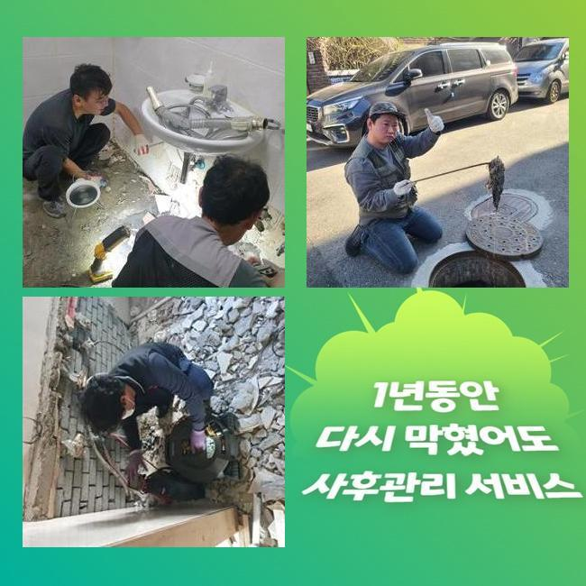
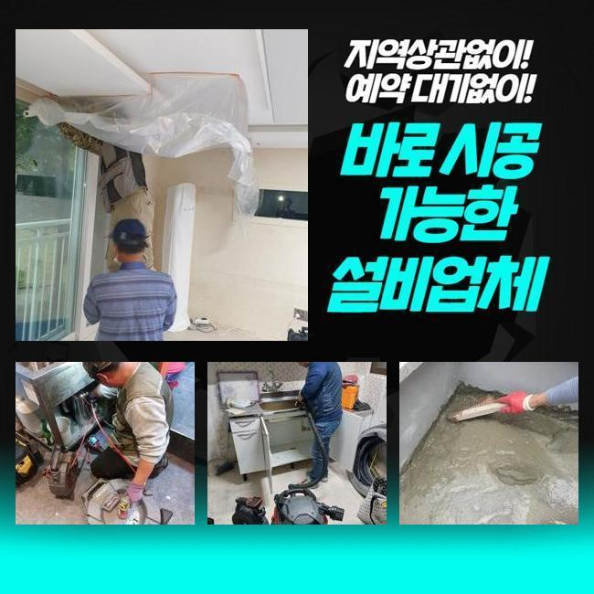
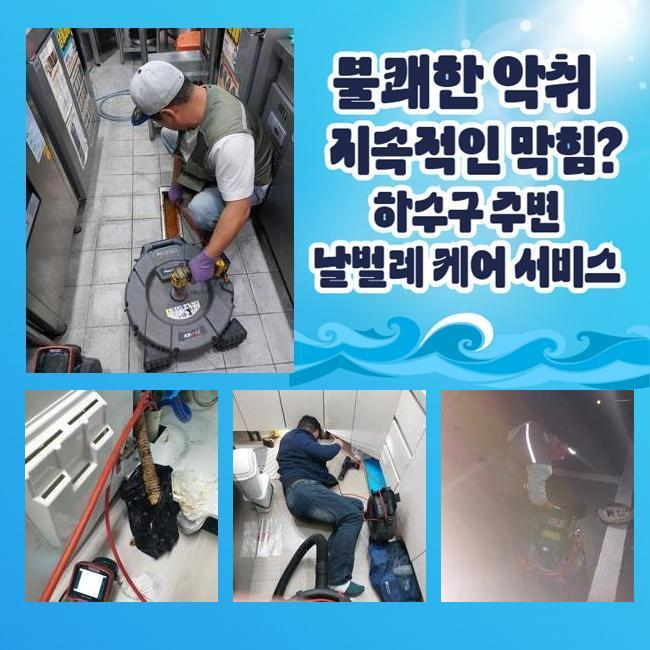
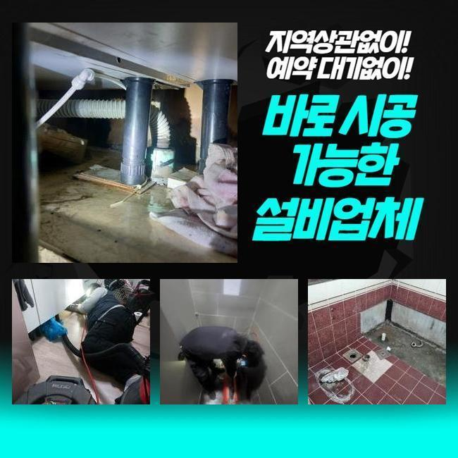
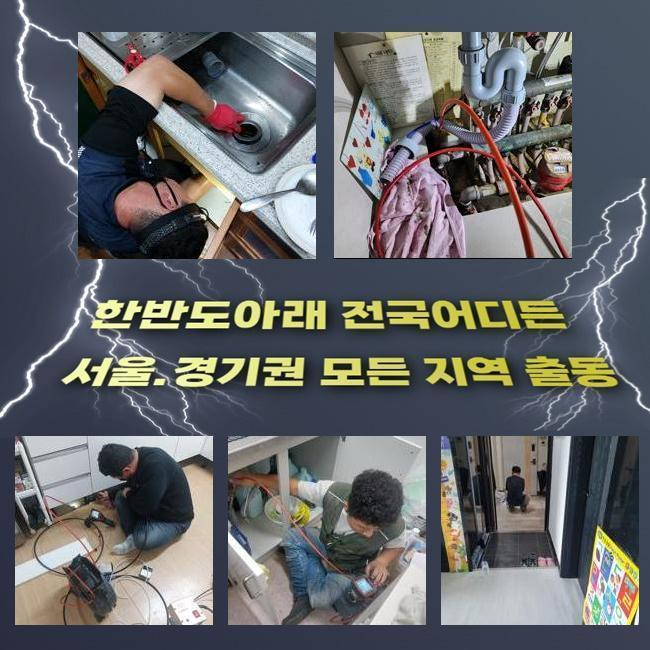
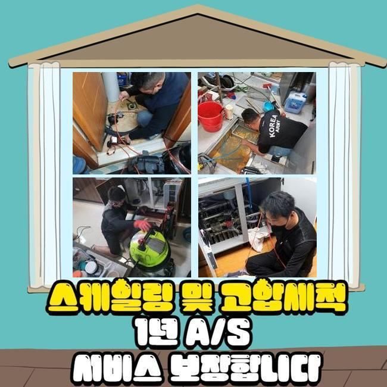
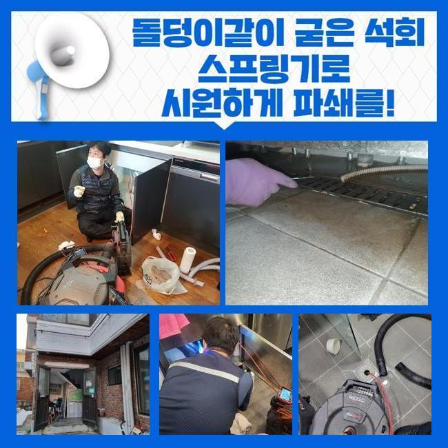

🏠 용산 신계동하수구뚫음 용산동5가 하수구뚫는곳 배관설비공사
용인시 처인구 배관막힘 전문 시공 후기

📋 작업 개요
- 위치: 용인시 처인구, 수원시 영통구, 화성시 동탄
- 서비스 유형: 배관막힘, 누수수리, 고압세척, 내시경점검
- 작업 일시:
- 업체명: 하수구수사대 (010-5615-2118)
🔍 문제 상황
용산 신계동하수구뚫음 용산동5가 하수구뚫는곳 배관설비공사
이번에 가본 곳은 거실 화장실에서 급작스레 탁수가 안내려가는 일이 생겨서 연락하셨어요
배수문 주변을 깔끔하게 만들어도 빠져나갈 징조가 안보였고 천천히 탁수가 치미는 상황이라 범상치 않은 사태라 인지하셨답니다
이럴땐 희석제 같은걸 넣거나 구두주걱을 이용해서 사태를 처리하실수도 있겠으나 관에 커다란 슬러지가 잔류한다면 기대한 결과를 얻기 힘들죠
욕실은 매일 쓰는 곳이니 여러 장애현상이 표출된 가망이 크며 그것이 발현되었을 때 방치하지 않고 관련조치를 받아보셔야 한답니다
별생각 없이 이부분을 방치하는 경우에는 오취가 올라오거나 역류까지 감내해야 할수가 있어요
본 지점은 전체적 문제점으로 문의하셨기에 누수진단을 하는 기기들도 준비하여 내방하게 되었어요
트러블이 생긴 곳이 어떤 증세를 가졌냐를 보면서 그에 합당한 공구가 선별되어야 해서죠
이에 대한 여러종류의 도구를 보유중인 우리들은 누수나 막힘에 대한 것들은 순조롭게 해결하고 있답니다
하수구막힘으로 방문하였더라도 누수증세가 동반될수 있으며 그것때문에 별도의 공정이 요청될수가 있어 우리들은 늘상 모든 변수에 대한 무장을 행하고 있답니다
우선적으로 배관 모습을 인식하려고 배관배관배관내시경설비를 안에 투입했죠
해당 기기는 유연하고 가는 재질로 만들어져 있어서 구멍이 아무리 작아도 쉬이 목표지점에 갈수 있죠
관측해보니 하수관 중앙부근부터 침전물이 다량 상존했죠
집중하여 오염물질을 들여다보니 벽을 둘러싸고 있으면서 어떤 건 고착화되어 움직이지도 않는걸 파악했어요

🔎 원인 분석
💡 전문가 진단: 정밀 진단 장비를 사용하여 슬러지의 고착 여부를 판명하고 타격/세척 작업을 실시했습니다.
이에 따라 유동성이 대체로 멈췄다는걸 파악할수 있었죠
또 화장실의 배수공에선 물이 토출되는 상황이 증가하는걸 목견하였어요
이때에는 주저하지 마시고 세정작업을 실시해야 한답니다
시간이 지난다고 하여 찌꺼기가 없어지지 않을것이고 구린내까지 올라오면 더욱더 까다로운 사태가 돼버릴 수 있답니다
찌꺼기의 특징이나 고착수준 등의 세부적인 부분들을 검토하면서 석션기기와 샤프트기기를 세팅했어요
우선적으로 석션장비를 가동해 처리해 보고자하여 공정을 차분하게 실시해보기로 했어요
흡입장비는 일반 청소기기와 유사하나 훨씬 높은 가동수준을 보인답니다
간소한 물질들은 이걸로 힘들지않게 처치할수 있죠
하지만 긴기간 누증되어서 단단해진 부분들은 석션공구로 해결하기 힘들어요
이에 따라 강력한 가동력을 소유한 샤프트기기를 쓰기로 한겁니다
신중하게 노폐물들을 분해하고 흡입장비를 틀어서 빠르게 소멸시켰어요
말씀드린 업무는 단 한번으로 마무리되는게 아니에요
내측에 상존하는 오염물질이 배관촬영기기에서 없어질때까지 시행되어야 해서죠
그러므로 오랫동안 되풀이하여 세척했죠
그걸 통하여 깨끗해진 배관면이 모습을 보였죠

🔧 작업 과정
요번에 작업한 건물처럼 허다한 건축물에서 비슷한 고장이 발현되고 있답니다
욕실이나 싱크대에 단단한 물체가 빠져들어가서 생길수도 있지만 준공 이후 거의 청소하지 않았다는 사항도 이유라고 볼수 있겠죠
수도를 틀면 빠져나가는게 일상으로 간주하는 고객님들이 많아요
그것은 설비 보존에 관계된 의식이 결여되어 있다는 의미랍니다
그리하여 건축물을 짓고 난뒤 단 한번도 슬러지를 관리안한 지점이 생각외로 많죠
그 부분은 상시 고장이 일어날 공산이 있는거죠
이때문에 별문제가 없는 경우라도 관리가 안된 기간이 길다면 한번쯤은 배수관 세척관리를 받아보시길 권장해요
그리고 자기가 수선장비가 갖춰어졌다면 아무때나 상황이 발현되었을때 감당할수 있을거라 여기시는 경우도 있는데요
그렇지만 플렉스샤프트는 드센 압력을 보유하여 잘못하면 하수관이 부서질수가 있죠
또한 마모된 파이프는 홀이 생길수도 있는 조건이기에 숙련성을 탑재한 기술자가 업무를 하는게 맞아요
그리하여 섣부르게 기기를 사용해서 막힘을 고착화하는 결정은 삼가야 합니다
이물들을 살뜰히 없애고 배관실로 들어가 적절하게 물이 빠지는지 진단합니다
소멸되는 정황을 확인하니 정체가 일어나는 정황이 사라지게 되었고 원만하게 내려가는 걸 목도했죠
최종 확인 절차로서 표면이 둥그스름한 잔재들을 고의적으로 투입시켜서 제대로 내려가는지 테스트해 목견하였어요
보통 이런 방식으로 잔재를 넣는 건 파이프를 보존하려는 시각에서는 바람직하지 않죠
그러나 원만히 시공되었는가를 파악하는 단계로 안전조치를 다하여서 수행한 것이라 트러블을 유발시키진 않아요
그로서 비슷한 슬러지가 관로 속에 유입되었을때 지체없이 없어지리라는걸 강력하게 예상할수 있습니다
하수관에 장애가 일어났다면 노하우를 충분히 갖추고 업무를 하는 데에 의뢰해야 조속히 상황을 해결할수 있어요
이따금 배수트러블이 나왔을 경우에 지금 생활을 영위해야 된다는 이유들로 자체적으로 해결하려 시도하는 경우도 많아요
하지만 이 경우 슬러지가 더욱 깊이 진입해 골치아픈 정황을 야기할수 있죠
다른배관팀이 손봤다가 재발하는 일이 생겨 조치가 절박한 의뢰인분들도 출동하여 빠르게 처리하고 있답니다
거의 잔재들이 상존한채로 유속이 저하되었던 사례로 생각할수 있습니다
그러하기에 시간의 흐름에 따라서 이물질이 점점 늘어나게 됐고 그것으로 체증이 나타났다고 볼수 있어요


✅ 작업 완료
이에 따라 원인을 점검하는 사람에게 전화하시는게 마땅하고 적합한 도구들이나 기술력을 가지고 있는지 물어보시는 것도 좋겠죠
우리들은 애프터서비스도 빈틈없이 실시하고 있죠
혹시나 저희측에서 시공을 맡기시고 재발하는 일이 생겼다면 알려주시는대로 즉시 정리해드려요
그러나 고객분의 실수에 의한 장애들은 견적금이 생길수 있단걸 고지해드려요
저희팀은 항시적으로 진솔하게 사태를 분석해드리고 막힘을 신속하게 없애드리려 노력합니다
수선이 요망된다면 주저하지 말고 의뢰하시길 바라요




⚠️ 하수구 배관 막힘 예방 및 관리 가이드
- ✅ 머리카락, 비닐, 물티슈 등 물에 분해되지 않는 이물질은 절대 흘려보내지 마세요.
- ✅ 기름기 많은 식기는 설거지 전 키친타올로 먼저 기름때를 닦아내세요.
- ✅ 주기적으로 배수구에 뜨거운 물을 가득 부어주어 유지방 고착을 방지하세요.
- ✅ 작업 후 1년 이내 재발 시 무상 A/S 보증 서비스를 제공합니다.
💡 핵심 정리
- 확실한 장비 작업(내시경 점검 및 샤프트 스케일링)으로 원인을 뿌리 뽑습니다.
- 작업 후 1년 이내에 동일한 부위 재발 시 100% 무상 A/S 서비스를 보장합니다.
- 서울 · 경기 · 인천 전 지역에 24시간 언제든 긴급 출동할 수 있도록 항시 대기 중입니다.
❓ 자주 묻는 질문 (FAQ)
🚨 용인시 처인구 배관막힘 문제로 고민이신가요?
정확한 원인 진단과 확실한 시공으로 재발 없는 해결을 약속드립니다.
24시간 긴급 출동 | 서울 · 경기 · 인천 전지역 | 1년 내 재발 시 무상 A/S